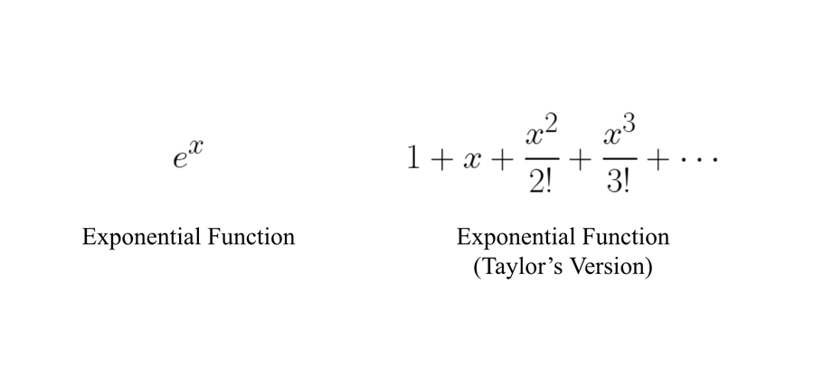

3 Moments
3.1 Expected Values
Remember that a random variable is a function that associates a real number with each element in the sample space. The probability a RV takes on a certain value, or falls within a range of values, is described by the probability distribution (pdf or pmf) of the RV. Often, we are interested in the expected/“average” value of the RV. The expected value can tell us things like the “average” amount we might expect to win (or lose!) in a game, the typical weight range for 3 month old babies, the price we might expect to pay for a typical house in a new city.
Let \(X \sim f_X(x)\), \(F_X(x)\) and let \(g\) be a function defined on the support of \(X\). The expected value of \(g(X)\) is E\([g(X)]\), where
NOTE: The expected value is a characteristic of the underlying distribution of the random variable–its CDF/pdf. It is NOT calculated from data. The sample mean calculated from data could be used to estimate the true expected value (and this is what we did in STAT 102; \(\mu\) vs \(\bar X\)).
Example: Consider a game in which a fair die is thrown. The player pays $5 to play, and wins $2 for each dot that occurs on the roll. Is it worth the $5 to enter?
An insurance policyholder’s loss, \(X\), follows a distribution with pdf \[ f_X(x) = \left \{ \begin{array}{ll} \frac{2}{x^3} & x > 1 \\ 0 & \hbox{else} \end{array} \right . . \]
- What is the expected loss for a randomly selected policyholder?
- The insurance company reimburses a loss up to a benefit limit of 20. What is the expected value of the benefit paid under the insurance policy?
Example: Let \(f_X(x) = \left\{ \begin{array}{ll} e^{-x} & x \geq 0 \\ 0 & \hbox{else} \end{array} \right.\).
- Suppose \(g(X) = X\). Find E\([g(X)]\).
- Suppose \(g(X) = e^{X}\). Find E\([g(X)]\).
If E\([|g(X)|] = \infty\), then E\([g(X)]\) does not exist.
Let \(X\) be a random variable and let \(a\), \(b\) and \(c\) be constants. For any functions \(g_1(x)\) and \(g_2(x)\) whose expectations exist,
Example: The failure of a circuit board interrupts work that utilizes a computing system until a new board is delivered. The delivery time (in days), \(X\), follows a distribution with pdf \(f_X(x) = \left\{ \begin{array}{ll} \frac{1}{4} & 1 \leq x \leq 5 \\ 0 & \hbox{else} \end{array}\right.\). The cost of a board failure and interruption is given by \(C=500 + 100X^2 - 25 X\). Find the expected cost associated with a single failed circuit board.
3.2 Moments
A particular set of expected values are called moments.
The \(n^{th}\) moment of \(X\) is
Example:
The \(n^{th}\) central moment of \(X\) is
Example:
Example (cont’d): Earlier, we considered a random variable, \(X\), representing the delivery time (in days) of a new circuit board, which had pdf \(f_X(x) = \left\{\begin{array}{ll} \frac{1}{4} & 1 \leq x \leq 5 \\ 0 & \hbox{else} \end{array}\right.\).
- Find the variance of the delivery time (in days) of a new circuit board.
- Suppose that the cost of a single failed circuit board is \(K=500 + 6 X^2\) (yeah, I know it’s not the same cost we used before). Find the variance of the cost associated with a single failed circuit board.
One identity that will come in VERY handy this semester:

This is especially helpful with a common discrete distribution called the Poisson.
Example: Suppose \(X\sim\) Poisson(\(\lambda\)). This means that \(f_X(x) = P(X=x) = \frac{e^{-\lambda}\lambda^x}{x!}\) for \(x=0,1,2,\dots\).
- E\((X)\) =
- Var\((X)\) =
3.3 Moment Generating Functions
A special expected value that is quite useful is the moment generating function. Moment generating functions can make our lives a LOT easier. We’ll first talk about how to find moment generating functions, and then discuss how to use moment generating functions in a few different ways.
3.3.1 Finding Moment Generating Functions
Let \(X\) be a random variable with pdf/pmf \(f_X(x)\). The moment generating function (mgf) of \(X\) is \(M_X(t)\), where
Note: At \(t=0\), \(M_X(t)=1\).
Example: Suppose \(X\sim\) Poisson(\(\lambda\)). What is the mgf of \(X\)?
3.3.2 Using Moment Generating Functions
The moment generating function (mgf) of a random variable is a tool we use for a variety of purposes. Specifically, we use the mgf to:
- Calculate moments (the mean, variance, other quantities calculated from moments like skewness and kurtosis)
- Identify distributions (of a random variable, or some function of a random variable)
If \(X\) has mgf \(M_X(t)\), then E\((X^n) = M_X^{(n)}(0)\), where
\(M_X^{(n)}(0)=\)
That is, the \(n^{th}\) moment of \(X\) is equal to the \(n^{th}\) partial derivative of \(M_X(t)\) with respect to \(t\), evaluated at \(t=0\).
Example (cont’d): Suppose \(X\sim\) Poisson\((\lambda)\). Using the mgf we found earlier, let’s find the mean and variance of \(X\).
Example: Let \(X\sim\) Gamma\((\alpha,\beta)\). This means that \(f_X(x) = \left\{ \begin{array}{ll} \left ( \frac{1}{\Gamma(\alpha) \beta^\alpha} \right ) x^{\alpha-1} e^{-x/\beta} & x \geq 0 \\ 0 & \hbox{else} \end{array}\right.\), where \(\alpha,\beta > 0\). Also note that \(\Gamma(\alpha) = \int_0^\infty y^{\alpha-1} e^{-y} dy\), \(\Gamma(\alpha+1) = \alpha \Gamma(\alpha)\), and, if \(n\) is an integer, \(\Gamma(n+1) = n \Gamma(n) = n!\). What is the mgf of \(X\)?
Example (cont’d): Using the mgf, find the mean and variance of \(X\).
Notice that one of the key steps in finding the mgf of a gamma distribution was recognizing another gamma pdf.
\[\begin{align*}
M_X(t)
&= \frac{1}{\Gamma(\alpha) \beta^\alpha} \int_0^\infty \underbrace{x^{\alpha-1} e^{x(t-1/\beta)}}_{\text{looks like $x^{\alpha-1}e^{-x/\beta^*}$}} dx
\\
&=\frac{1}{\Gamma(\alpha) \beta^\alpha} \int_0^\infty
\underbrace{x^{\alpha-1} e^{-x/(\frac{\beta}{1-\beta t})}}_{\propto \operatorname{gamma}\left(\alpha,\frac{\beta}{1-\beta t}\right) \text{ pdf}} dx
\end{align*}\]
The part we recognized is called the kernel of the pdf.
A kernel of a function is the main part of the function, the part that remains when constants are ignored.
The mean and variance don’t completely describe a distribution. These three distributions all have the same mean and variance.
3.4 Other Quantities Based on Moments
The distribution of a random variable is most often described by its mean and variance. However, as evidence by the previous examples, we might need additional measures. One such quantity is the skewness.
The skewness of a random variable \(X\) measures the lack of symmetry in the pdf and is defined as
Distributions of random variables can be summarized by a variety of measures, among which are mean, variance/standard deviation and skewness. Random variables with symmetric pdfs/pmfs have a value of ________ for the skewness. Random variables with right-skewed pdfs/pmfs have ________ values for the skewness. Random variables with left-skewed pdfs/pmfs have ________ values for the skewness.
Another such quantity is the kurtosis.
The kurtosis of a random variable \(X\) measures the peakedness or flatness of the pdf and is defined as
The normal distribution has a kurtosis of 3, but often excess kurtosis is calculated, rather than kurtosis. Excess kurtosis is \(\alpha_4 -3\), so the normal has excess kurtosis = 0.
3.5 Identifying Distributions
Earlier we said that mgfs can also be used to identify distributions, both for RVs and for functions of RVs. How does this work?
Example: Let \(X\) be a random variable with mgf \(M_X(t) = e^{3.2(e^t-1)}\). What is the distribution of \(X\)?
Example: Let \(X\) be a random variable with pdf \(f_X(x) = \left\{ \begin{array}{ll} \frac{1}{\beta} e^{-x/\beta} & x \geq 0 \\ 0 & \hbox{else} \end{array}\right.\), where \(\beta > 0\).
- What is the mgf of \(X\)?
- Where have we seen something similar before?
We can also use mgfs to identify the distributions of functions of random variables (i.e., Transformations–much more on these later).
Assume a random variable \(X\) has CDF \(F_X(x)\), pdf \(f_X(x)\) and mgf \(M_X(t)\). If \(Y=g(X)\), then the mgf of \(Y\) is
\(M_Y(t)=\)
Example: Consider the linear transformation \(Y=aX + b\), where \(a\) and \(b\) are constants. What is the mgf of \(Y\)?